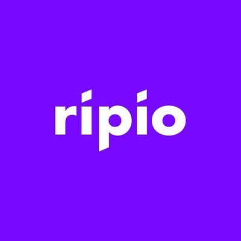

Cripto Vida: Donde Comprar
Binance

Binance es una buena opcion esta blockchain de intercambio de criptomonedas da los usuarios una plataforma para comerciar más de 100 activos digitales. Desde 2020, es considerada la plataforma de intercambio con el mayor volumen comercial del mundo.
Ripio
Comprá y vendé bitcoins y otras criptomonedas de forma rápida y simple. Somos la puerta de acceso al futuro de la economía digital.
Coinbase

Coinbase Inc. es una plataforma de comercio de criptomonedas con sede en San Francisco, California, que ofrece servicios de intercambio entre criptomonedas y monedas fiduciarias en alrededor de 32 países, así como almacenamiento y gestión de activos digitales en 190 países en todo el mundo.